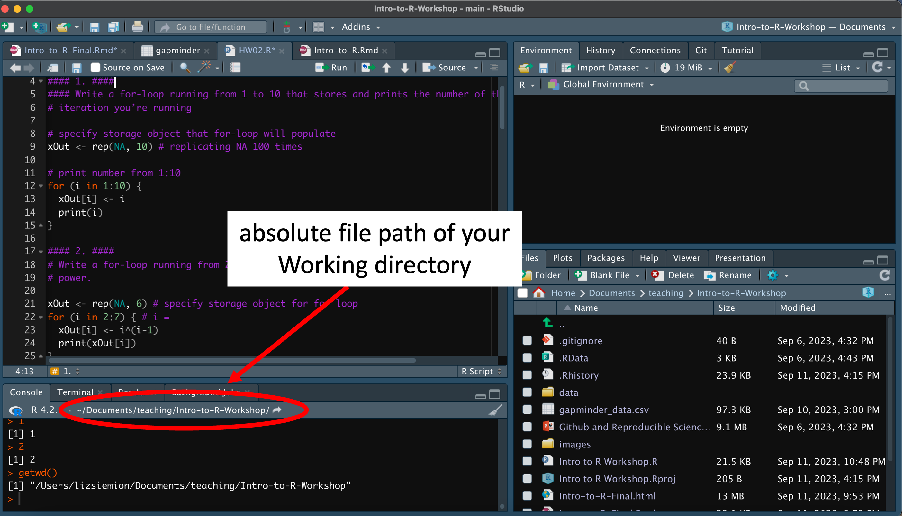
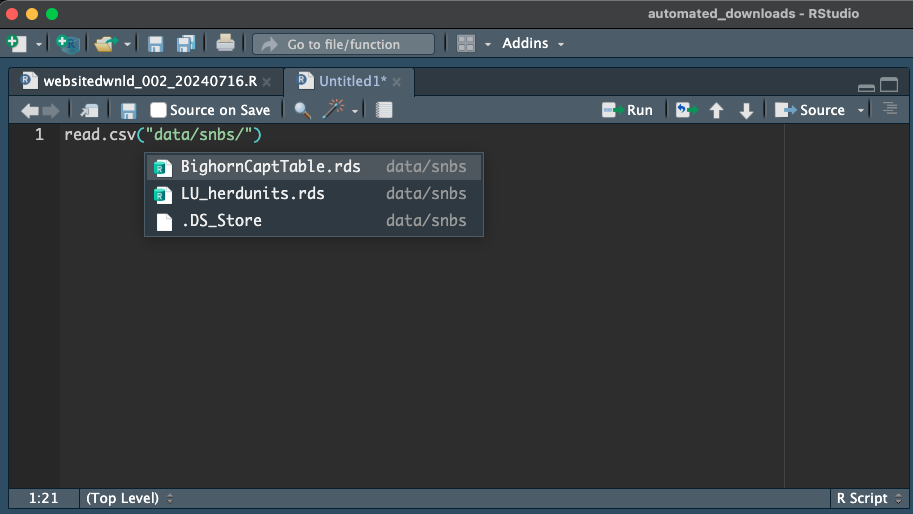

Chapter 3 File paths
To manually set the working directory or load a file from a specific location, it’s important to understand how file paths work.
3.1 What is a file path?
Your computer organizes files using a system of nested folders (i.e. directory structure), where each folder can contain other folders or files.
Image from R for Epidemiology (https://www.r4epi.com)
File paths are addresses to different locations (e.g. files, documents) within this nested framework. They represents the order of nested folders that the computer must go through to find that particular item. Each folder is separated by a slash. We can use Absolute or Relative file paths in R to locate files. Knowing the file path is important when you need to set your working directory. See this website for a detailed explanation.
3.2 Different separators between operating systems
Different operating systems use different separators between folders of a file path.
- On windows, it is
\ - On Mac/Linux, it is
/
R uses the / as the folder separator, even on Windows. So if you copy a file path from File Explorer (which uses ), be sure to either replace all backslashes () with forward slashes (/), or use double backslashes (\) so R can read the path correctly.
3.3 Absolute and Relative file paths
We can use Absolute or Relative file paths to give R directions to where we want to go.
Absolute Paths: describe where a file is located relative to the root directory of the computer. This can be done on windows through right clicking the file path in windows explorer and selecting copy as text, or right clicking a file, holding the option key and selecting copy as path name on a macbook.
- Windows example:
C:/Users/Documents/Teaching/IntroR/data/Intro-to-R-Workshop.csv - Macbook example:
/Users/lizsiemion/Documents/Teaching/IntroR/Intro-to-R-Workshop.csv
Relative Paths: describe file location with respect to the current working directory. This just means that the file path starts with the location of the home directory.
- Windows example:
IntroR/data/Intro-to-R-Workshop.csv - Macbook example:
IntroR/data/Intro-to-R-Workshop.csv
)
It can be a bit cumbersome to work with absolute file paths. Since R Projects automatically sets the working directory as the project folder, we can use relative paths without any sort of additional set-up. Using relative paths also makes our code more readable, and easier to share and maintain. If we want to set our working directory manually, we can either use absolute or relative file paths. I recommend not changing the working directory within your script, as this can limit reproducibility.
3.5 Using the Tab Shortcut in RStudio
The Tab shortcut in RStudio is a powerful shortcut that helps you write code faster and with fewer errors. It’s especially helpful for auto-completing file paths, function names, object names, and more. When you’re loading a file (e.g., using read.csv()), you can use the Tab key to help you find and insert the correct relative file path.
For example: read.csv("data/
Then press the Tab key. A drop down list will appear showing the contents of the data/ folder (if it exists). You can then use the arrow keys to select a file and select Enter to insert it into the code. The Tab key shortcut helps avoid typos and ensures you’re referencing the correct file.

EXERCISE 1: FILE PATHS
- Enter
getwd()into the console to return the absolute file path - Use a relative file path to load the bighorn capture table using read.csv(“TYPE_RELATIVE_FILE_PATH”). The read.csv() function tells R to load the CSV file into your Environment. Make sure the file path is placed inside quotes and within the parentheses. Tip: Try using the Tab key after typing the opening quote to help you navigate and generate the correct relative file path.